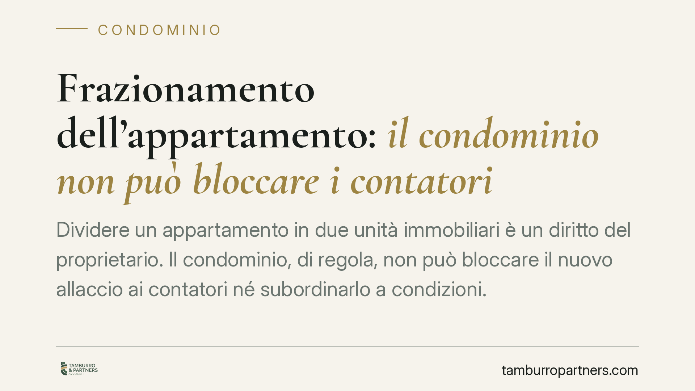

Frazionamento dell'appartamento: il condominio non può bloccare i contatori
Dividere un appartamento in due unità immobiliari è un diritto del proprietario. Il condominio, di regola, non può bloccare il nuovo allaccio ai contatori né subordinarlo a condizioni. Una delibera che lo impedisce è nulla, salvo eccezioni precise. Chiariamo quando l'assemblea può davvero opporsi e quando, invece, il diniego resta lettera morta.

Il fatto: frazionamento e allaccio negato
Un proprietario decide di frazionare il proprio appartamento in due unità immobiliari distinte. Per rendere autonoma la seconda unità serve un nuovo allaccio ai servizi comuni: acqua, gas, energia elettrica. A quel punto l'assemblea, o l'amministratore, oppone un rifiuto. Talvolta il diniego è secco; altre volte è mascherato da condizioni gravose (contributi straordinari, autorizzazioni discrezionali, subordinazione a lavori non necessari).
La domanda è semplice: il condominio ha il potere di bloccare i contatori? La risposta, nella grande maggioranza dei casi, è no.
Inquadramento normativo
Il punto di partenza è l'art. 1117 n. 3 del codice civile, che include tra le parti comuni gli impianti idrici, del gas, dell'energia elettrica e simili, ma solo fino al punto di diramazione verso le proprietà esclusive. Da quel punto in poi la diramazione serve l'uso individuale del singolo condòmino.
Ogni condòmino può servirsi delle cose comuni, purché non ne alteri la destinazione e non impedisca agli altri il pari uso (art. 1102 cod. civ.). Realizzare un secondo allaccio a valle del punto di diramazione rientra, di norma, in questo diritto: non è un'appropriazione del bene comune, ma un suo utilizzo conforme alla funzione di servire le unità immobiliari.
Su questo perimetro incidono i limiti dei poteri assembleari. L'art. 1135 cod. civ. elenca le competenze dell'assemblea, che non comprendono il potere di comprimere i diritti dominicali del singolo sulla propria proprietà esclusiva. Una delibera che nega o condiziona l'allaccio incide su un diritto individuale e, per costante orientamento della Corte di Cassazione, è nulla — non semplicemente annullabile. La nullità, ai sensi dell'art. 1421 cod. civ., può essere fatta valere da chiunque vi abbia interesse e senza limiti di tempo: non occorre impugnare la delibera nel termine di trenta giorni previsto per le sole delibere annullabili.
Le due eccezioni che contano
Il principio ammette due deroghe, entrambe da leggere in senso restrittivo.
Prima eccezione: il regolamento contrattuale. Se il regolamento di condominio ha natura contrattuale — cioè è stato accettato da tutti i condòmini o richiamato negli atti di acquisto — può contenere clausole che limitano il frazionamento o l'incremento delle unità. In questo caso il limite non nasce dalla delibera, ma da un vincolo negoziale già assunto. Attenzione, però: un regolamento meramente assembleare non ha questa forza.
Seconda eccezione: il pregiudizio concreto agli impianti. Il condominio può opporsi se dimostra che il nuovo allaccio arreca un danno effettivo agli impianti comuni: sovraccarico delle colonne montanti, insufficienza della portata idrica, rischi per la sicurezza. Non basta l'affermazione generica. Serve un accertamento tecnico, tipicamente una perizia, che provi il pregiudizio in termini specifici e non ipotetici.
Implicazioni pratiche per chi frazionã
Per il proprietario, il messaggio operativo è netto: il diniego assembleare, di per sé, non è un ostacolo giuridicamente insormontabile. Se la delibera è nulla, non produce effetti e non deve essere impugnata entro termini stretti.
Resta però l'onere di gestire correttamente il rapporto con l'amministratore e con le società fornitrici, che a volte richiedono un nulla osta condominiale prima di installare il nuovo contatore. In presenza di un diniego infondato, occorre agire per rimuoverlo, evitando iniziative unilaterali sugli impianti comuni che potrebbero esporre a responsabilità.
Cosa fare in concreto
- Verifica il regolamento di condominio e accerta se ha natura contrattuale: solo in quel caso possono esistere limiti opponibili al frazionamento.
- Chiedi per iscritto all'amministratore le ragioni del diniego, sollecitando la comunicazione dell'eventuale delibera e del suo contenuto integrale.
- Documenta la compatibilità tecnica del nuovo allaccio con gli impianti comuni, se necessario tramite relazione di un tecnico abilitato.
- Non intervenire autonomamente sugli impianti comuni prima di aver chiarito la posizione: eviti contestazioni e possibili azioni di ripristino.
- Valuta l'azione di nullità della delibera che nega o condiziona l'allaccio, esperibile senza il termine dei trenta giorni.
Ogni situazione dipende dal contenuto del regolamento e dallo stato reale degli impianti. Consigliamo un esame preliminare della documentazione prima di formalizzare qualsiasi richiesta o iniziativa.
---
*Contributo informativo a cura di Tamburro & Partners - Avv. Giuseppe Tamburro. Non costituisce parere legale.*
Ogni condominio ha una storia a sé.
Se gestisci un'amministrazione e vuoi un confronto su una specifica questione condominiale, scrivi allo studio. Ti rispondiamo entro un giorno lavorativo.